<%= t.renderMarkdown(archieml.story.chinook) %>
Echolocation
Toothed whales, including orcas, and most bats have the ability to locate and identify objects through echoes, which are reflected sound. For killer whales, echolocation is crucial for hunting salmon.
How echolocation works
Click on any number or arrow to begin


Sources: Marla Holt, National Oceanic and Atmospheric Administration, Northwest Fisheries Science Center
EMILY M. ENG / THE SEATTLE TIMES
EMILY M. ENG / THE SEATTLE TIMES
<%= t.renderMarkdown(archieml.story.surfacehunt) %>
<%= t.include("_prerollVideo.html", { file: "4_dronesurfacehunt_loop.mp4", id: "6027357692001", runtime: "4:43" }) %>
In this rare video footage, two J pod whales chase a chinook salmon, hunting at the surface of the water on the west side of San Juan Island in August 2018. The older whale, J46, after several tries catches the fish and shares it with the youngest member of her family, J53. (Credit: Center for Whale Research and Michael Weiss and Darren Croft, University of Exeter. Taken under NMFS permit 21238)
<%= t.renderMarkdown(archieml.story.surfacehuntend) %>
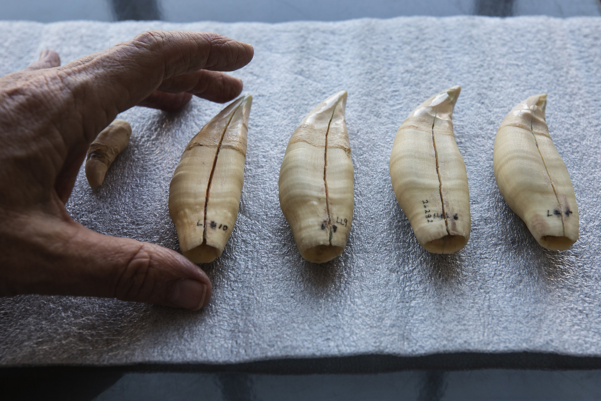
The teeth of southern resident killer whales are up to 4 inches long, hard and dense as marble, and needle-sharp for shredding salmon. These teeth belonged to Namu and are kept at the Burke Museum of Natural History and Culture. (Steve Ringman / The Seattle Times)
<%= t.renderMarkdown(archieml.story.ancienthunters) %>
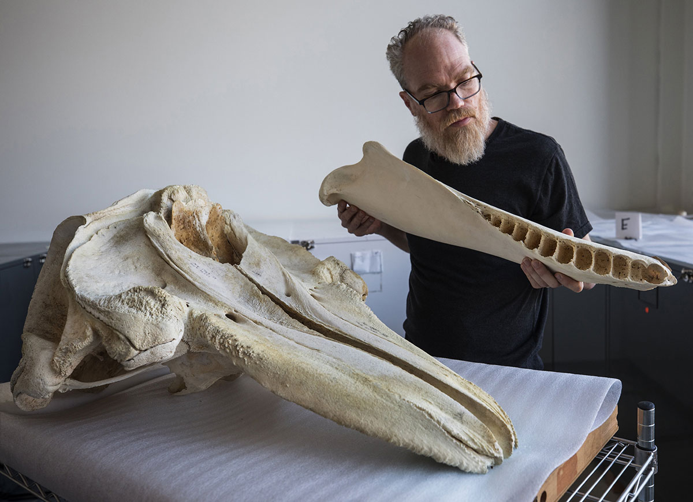
Jeff Bradley, mammology collections manager at the Burke Musuem of Natural History and Culture, holds a jawbone from Namu. The world's first captive performing killer whale, Namu was brought by Ted Griffin to his aquarium on Elliott Bay in 1965. The big sockets in the jawbone held his teeth. (Steve Ringman / The Seattle Times)
Types of sounds
Killer whales make three different types of sounds: whistles, calls and clicks. Whistles and calls are used for communication, while echolocation clicks help with navigation.
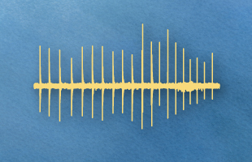
Clicks
Sounds are so important to whales that within days of birth calves begin to vocalize. Around 2 months old, calves can send pulse calls similar to the adults. They selectively learn calls from their mother as they mature.
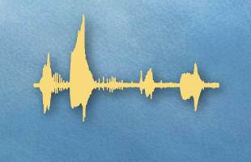
Calls
Calls that always sound the same are called discrete or stereotyped calls. Pods that share a number of discrete call types form an acoustic clan with its own unique vocal tradition. Even within a clan, different groups can have their own unique way of making certain calls and forming their own dialects. These dialects are distinct enough that no two are the same.
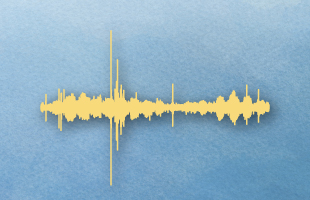
Whistles
Whistles are continuous single tones at high frequencies used for close-range communication.
Calls are made in lower frequencies, and can travel up to 9 miles. Pulse calls create rapid streams of sound and are the most common vocalization. These calls are used for finding and staying in contact with one another and coordinating movement.
Source: Marla Holt, National Oceanic and Atmospheric Administration, Northwest Fisheries Science Center
<%= t.renderMarkdown(archieml.story.culture) %>
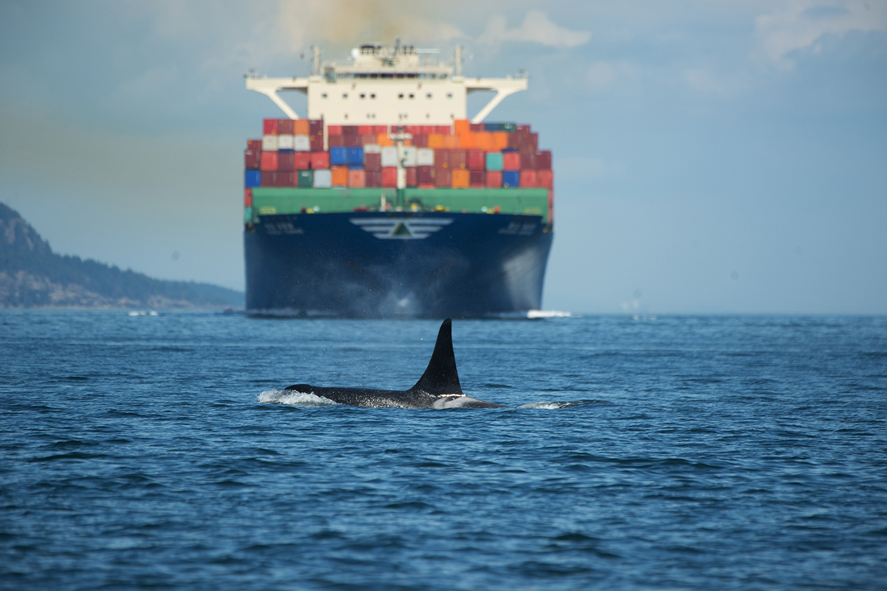
Orca L87 plies the Haro Strait as a ship approaches. Killer whales must raise their voices to be heard, and they forage less in the presence of vessels. Noise disturbance is identified by scientists as one of the three main threats to the survival of the endangered southern residents that frequent Puget Sound. (Capt. Alan Niles / Maya's Legacy Whale Watching)
<%= t.renderMarkdown(archieml.story.maritimeculture) %>
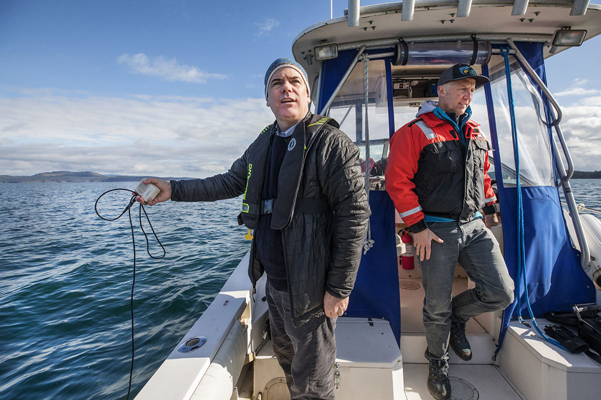
Scientist Rob Williams, left, of the non-profit Oceans Initiative, and Joe Gaydos, senior scientist of the SeaDoc Society, listen to the racket of industrial shipping underwater using a hydrophone dropped into Haro Strait. (Steve Ringman / The Seattle Times)
<%= t.renderMarkdown(archieml.story.smallcity) %>
LEARN MORE
Explore a glossary of orca terms and our orca reading list.
Val Veirs drops an underwater microphone near his home on the west side of San Juan Island. Underwater sounds stream in, from the groans of ships to the rumble of ferries. (Ramon Dompor / The Seattle Times)
<%= t.renderMarkdown(archieml.story.hydrophones) %>
<%= t.renderMarkdown(archieml.story.frequencies) %>
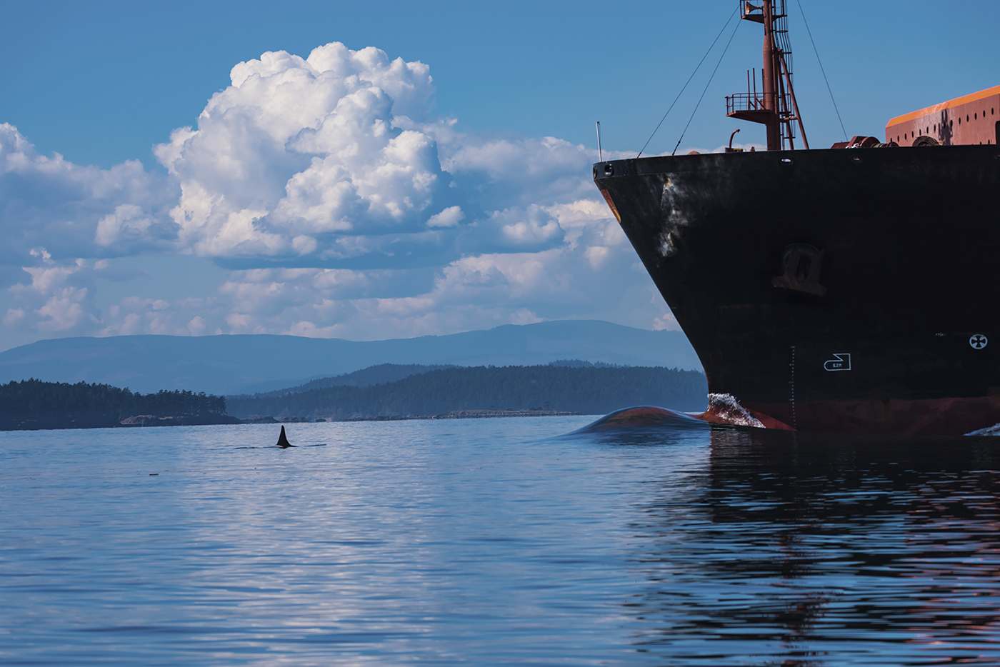
Southern resident orca J27 is dwarfed by the hull of a ship in Haro Strait. The west side of San Juan Island is a primary foraging ground for the southern residents but also a shipping route for container ships, oil tankers, and other commercial traffic to and from the Port of Vancouver, the busiest by tonnage on the West Coast. (Ken Rea / Special to the Seattle Times)
How these ships sound underwater
A container ship, bulk carrier and car carrier groaned through the Haro Strait on a winter day in March, while a hydrophone captured the sounds from nearby San Juan Island. Listen to the recordings here.
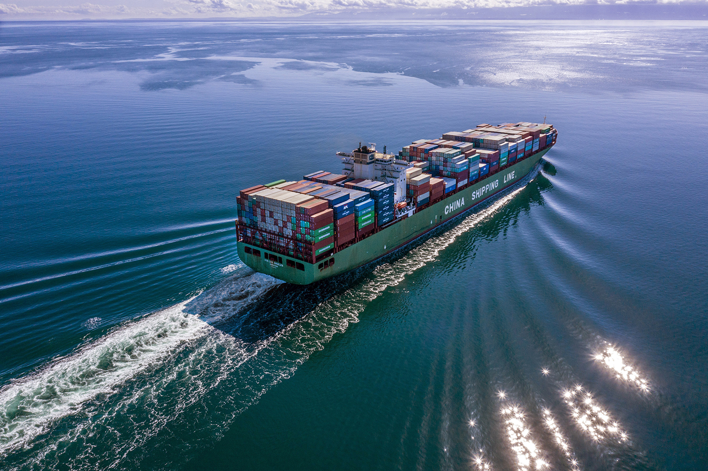
Container ship Xin Los Angeles
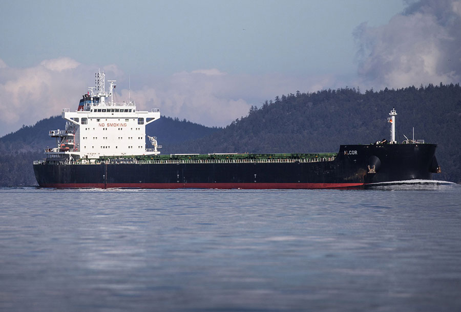
Bulk carrier Alcor
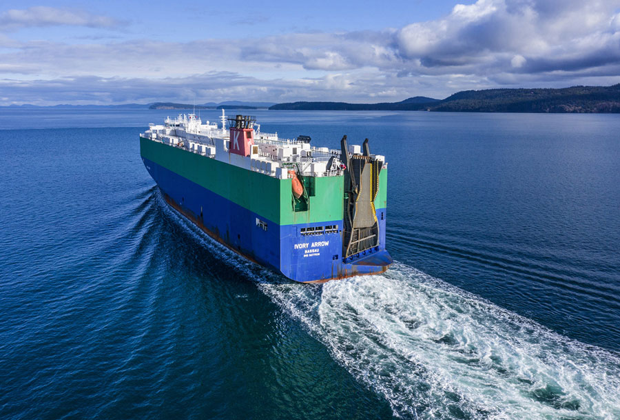
Car carrier Ivory Arrow
<%= t.renderMarkdown(archieml.story.calls) %>
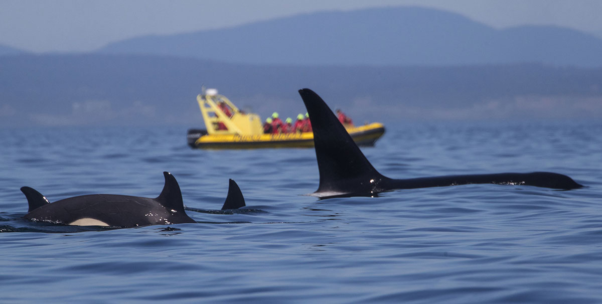
Whale watchers from B.C. observe transient orcas. In an industry that draws about 500,000 people a year, southern resident orcas now comprise only 10 to 15 percent of sightings; most are humpbacks, gray whales and transients. (Steve Ringman / The Seattle Times)
<%= t.renderMarkdown(archieml.story.whalewatching) %>
<%= t.include("_prerollVideo.html", { file: "7_Sound_BalcombSonar_loop.mp4", id: "6034814733001", runtime: "4:30" }) %>
Southern resident orcas appear to flee up the beach on the west side of San Juan Island to evade the sonar emitted from the USS Shoup in 2003. Navy sonar and explosives testing remain controversial. (Ken Balcomb / Center for Whale Research)
<%= t.renderMarkdown(archieml.story.balcomb) %>
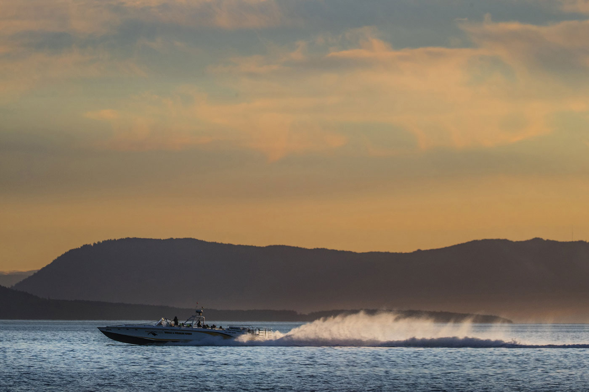
Speed is a top factor in the amount of noise orcas receive from vessel traffic. This whale watching boat is headed back to port after an evening cruise last July along the west side of San Juan Island. (Steve Ringman / The Seattle Times)
<%= t.renderMarkdown(archieml.story.fishermen) %>
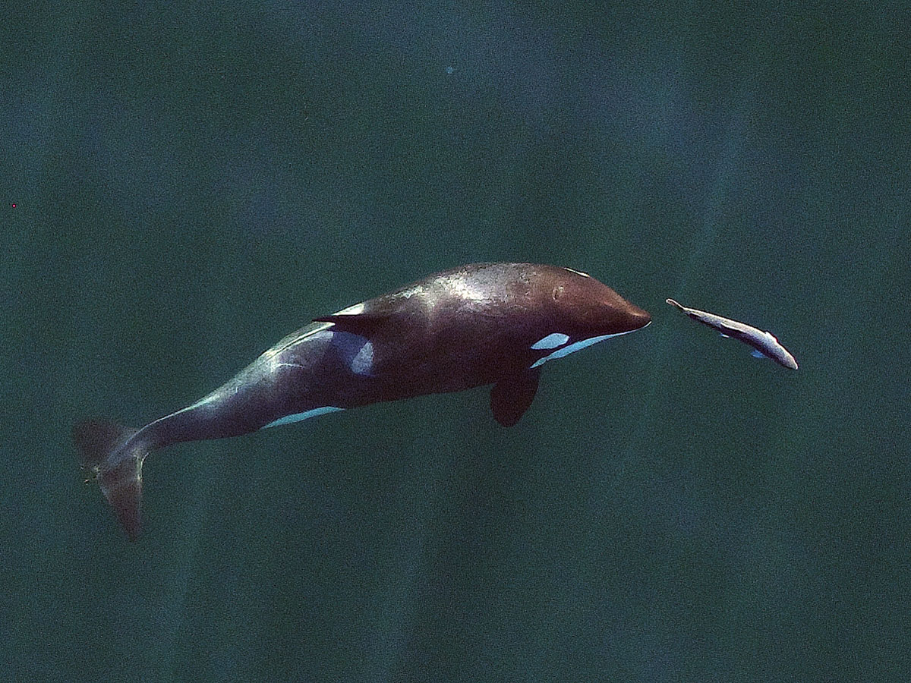
L121, a young southern resident killer whale, chases a chinook salmon near Vancouver Island in September 2017, photographed by researchers using a drone flown more than 100 feet above the water. (John Durban / NOAA SWFSC; Holly Fearnbach / SR3; Lance Barrett-Lennard / Vancouver Aquarium, under NMFS permit 19091)
<%= t.renderMarkdown(archieml.story.tagline) %>
- Reporter: Lynda V. Mapes
- Photographer: Steve Ringman
- Project editor: Benjamin Woodard
- Photo editor: Fred Nelson
- Videographer: Ramon Dompor
- Video editor: Lauren Frohne
- Graphic artist: Emily M. Eng
- Art director and developer: Frank Mina
- Engagement: Jeff Albertson, Gina Cole
- Project coordinator: Laura Gordon
CREDITS
The opening video of a diving orca shows L95 hunting a salmon on the west side of San Juan Island in September 2015. (NWFSC / NOAA Fisheries under permit number 16163)